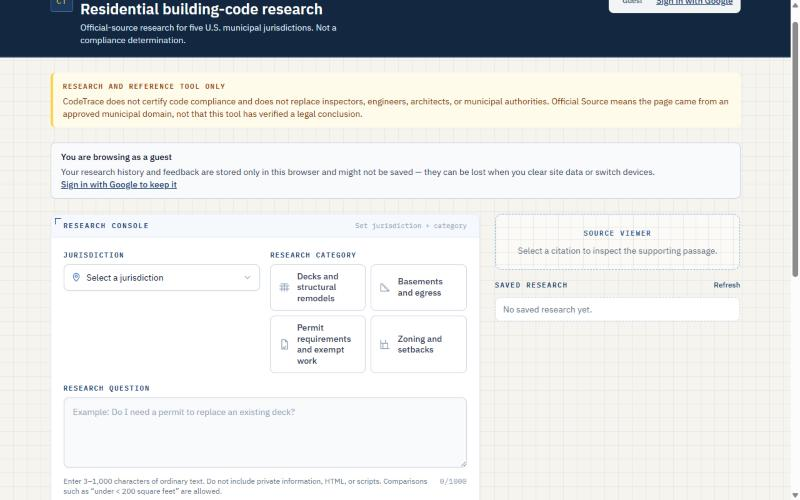
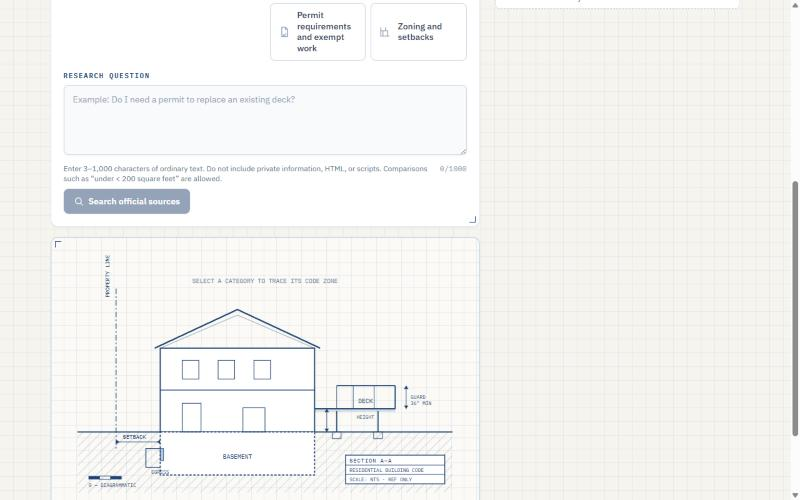
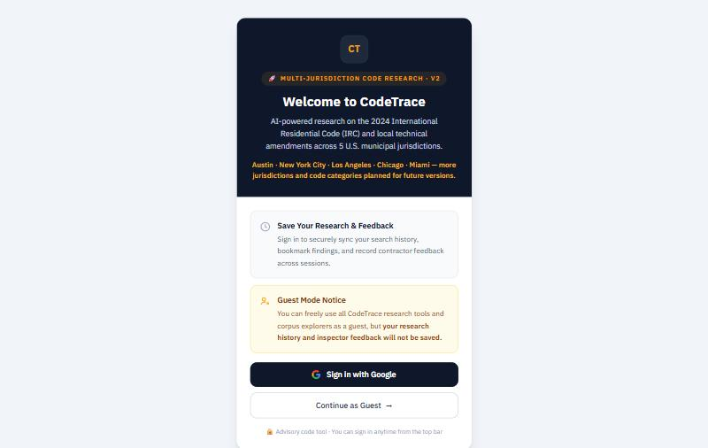

Building-code answers from official sources
CodeTrace answers residential building-code questions using only approved government websites, with a source for every answer.
Demo
The Interface
Screenshots from a local run of the app. The live search backend is offline, so these show the interface without search results.



How It Works
- ChoosePick one of five cities and a topic, then ask a question.
- ValidateThe question and choices are checked on the client and the server.
- SearchAn Edge Function runs Tavily with the key kept on the server.
- FilterOnly HTTPS results on approved city domains are kept.
- VerifyMeasurements must appear in a retained source.
- AnswerA summary appears with sources, or an honest insufficient-information response.
Key Decisions
Official sources only
Each city has an allowlist of government domains, and lookalikes such as nyc.gov.attacker.com are rejected.
Numbers need evidence
A measurement such as 10 feet must appear in a retained source, or the answer falls back.
Never infer a section
Section numbers appear only when a source states them.
Honest failure
A timeout or failed search never suggests that no requirement exists.
Stack
Frontend
React, TypeScript, Vite, and Tailwind CSS.
Backend
Supabase Edge Functions and Postgres.
Search
Tavily, called only from the server.
Auth
Google Sign-In with PKCE, plus anonymous guest sessions.
Delivery
Docker, AWS ECS, and GitHub Actions without stored AWS keys.
Coverage
Austin, New York City, Los Angeles, Chicago, and Miami.
Quality and Security
- 29 automated security and regression tests passing at the report date.
- Row-level security limits history and feedback to their owner.
- The Edge Function requires a verified token and accepts only POST JSON requests.
- Questions are limited to 3 to 1,000 characters, and markup and script input is rejected.
- Raw service errors are never shown to users.
What I Learned
Much of the work in an AI search product happens around the search itself, in the checks that decide what can be shown. An answer can sound right and still be unsupported, so numbers need their own check, and even error messages have to be worded carefully.
A research tool earns trust by showing its limits.